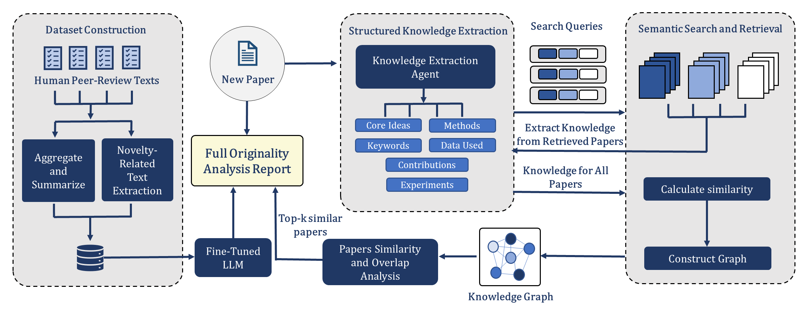

Overview
"Is this new?" is one of the questions that decides the fate of a paper, and one of the questions reviewers agree on least. A reviewer can only compare a submission with the work they happen to know, and in fields that publish thousands of papers a year, that knowledge is always partial. The result is novelty judgments that differ from reviewer to reviewer, and that are hard to verify because the comparisons behind them are rarely spelled out.
Novelty Reviewer approaches the problem from two directions. First, it learns what novelty means to reviewers, by studying how they actually judged it in more than a hundred thousand public reviews. Second, it does not rely on memory alone: it searches the literature for the closest prior work and makes those comparisons explicit. The project releases three things you can use independently:
- A dataset of reviewer novelty judgments for ICLR and NeurIPS submissions, with the original reviews, the passages that discuss novelty, and a paper-level novelty score and assessment.
- A model, Llama-3.1-8B-Instruct fine-tuned on this data, that reads a full paper and returns a novelty score with a reviewer-style justification.
- A framework that combines the model with literature retrieval and a similarity graph to produce an originality report naming the most similar prior papers.
These are meant for reviewers and area chairs who want a second opinion and a list of related work to check, for authors who want to see how the originality of a draft may come across, and for researchers studying automated reviewing or peer review itself.

Dataset
The dataset links 37,899 submissions to ICLR and NeurIPS (2022–2025) with their 102,021 official reviews, collected through the OpenReview API. Each record is one submission: its metadata, all of its reviews with their numerical scores, and a novelty annotation derived from what the reviewers wrote.
How the novelty labels are made
Reviewers rarely write a single sentence about novelty. Their view is spread across the review, sometimes stated outright and sometimes implied by a comparison or a criticism. The annotation therefore works in two stages, both with Llama-3.1-8B-Instruct:
- Extraction, per review. The model copies, word for word, every passage that bears on novelty: explicit judgments ("a novel approach"), implicit ones ("closely follows prior work on…", "an incremental contribution") and statements about the significance of the contribution. Descriptions of what the paper does and reviewer questions are excluded. These passages are released as
novelty_excerpts. - Aggregation, per paper. The model reads all reviews of the paper together with the extracted passages and writes one assessment that reflects the reviewers' collective view, with a short justification and a detailed assessment. It also assigns a score on a four-point scale. The instructions forbid the model from adding its own judgment: the score describes what the reviewers think.
We call the resulting label the Expert-Consensus Novelty Alignment (ECNA). Its four levels are defined as follows:
| Score | Label | Reviewers see the work as… |
|---|---|---|
| −1 | Not novel | derivative, largely replicating existing approaches |
| 0 | Limited novelty | a minor variation or application of known methods |
| 1 | Moderately novel | original, but overlapping notably with prior work or extending existing ideas |
| 2 | Highly novel | introducing fundamentally new ideas, methods or problem formulations |
Scale and coverage
Submissions to both venues have grown quickly; ICLR more than quadrupled between 2022 and 2025. The labels follow the pattern one would expect at selective venues: most submissions are seen as moderately novel, while clearly derivative and clearly groundbreaking work are both rare. This imbalance matters when you evaluate a model, which is why we report macro-averaged metrics.
Submissions per venue and year
Show data
| Venue | 2022 | 2023 | 2024 | 2025 | Total |
|---|---|---|---|---|---|
| ICLR | 2,420 | 3,431 | 6,644 | 10,474 | 22,969 |
| NeurIPS | 2,543 | 3,108 | 3,819 | 5,460 | 14,930 |
ECNA score distribution
Data schema
| Field | Description |
|---|---|
paper_id | OpenReview identifier; the paper is at openreview.net/forum?id=<paper_id> |
title, abstract, venue, year | Submission metadata from OpenReview |
split, in_eval_subset | Train/test assignment and the flag for the 500-paper evaluation subset |
reviews | All official reviews: full text in markdown, overall rating, confidence and the venue's sub-scores (soundness, contribution, technical novelty, originality, …) |
review_template | The venue's review form, with its sections and score rubrics |
novelty_excerpts | Verbatim review passages that assess novelty |
novelty_score | ECNA score in {−1, 0, 1, 2} |
novelty_score_justification, novelty_detailed_assessment | The paper-level assessment: a short justification and a longer analysis of novel and incremental aspects |
Splits. Papers are split into 31,411 for training and 6,488 for testing, so that all reviews of a paper fall into the same split. A fixed subset of 500 test papers, covering all four scores, is used for evaluation in the paper. Privacy. Author names, e-mail addresses and identifying links are removed from every text field, and full paper texts are not redistributed; the code downloads them from OpenReview when needed. The dataset card documents the construction and all fields in detail.
Framework
At the core is the Novelty Reviewer model: Llama-3.1-8B-Instruct, fully fine-tuned for three epochs on the full text of 25,951 training papers, converted to markdown, with their ECNA score and assessment as the target. On its own, it reads a paper and judges its novelty as reviewers would. The framework adds what a model cannot know from training alone: the specific prior work a paper should be compared with.
Extract the paper's knowledge
An LLM reads the manuscript and lists its core ideas, methods, contributions, keywords, data sources and experiments as structured JSON. This turns a long paper into a compact description that can be searched and compared.Retrieve related work
Each aspect becomes a search query: up to seven queries, for example the core ideas, the methods, or a core idea combined with its data source. They are sent to Semantic Scholar, and the most cited unique results (20 by default) are kept. For each candidate, the same knowledge extraction is applied to its open-access full text or abstract.Build a similarity graph
The manuscript and the candidates are compared aspect by aspect with sentence embeddings, and linked in a graph whenever they are sufficiently similar. Candidates are ranked by a mix of their similarity to the manuscript and their centrality in the graph, so that work which overlaps with many related papers rises to the top. For the top-ranked papers, the LLM also writes a short explanation of where the overlap lies.Assess novelty
The fine-tuned model reads the manuscript together with summaries of the top-ranked papers and writes the novelty score and assessment. The final report combines this assessment with the manuscript summary and the ranked list of similar papers, with their year, citation count, link and overlap explanation, as markdown and JSON.
The steps can also be used separately: the model alone needs only the paper, while retrieval and the graph are useful on their own for finding related work.
Getting started
Everything is packaged as a Python library with a command-line tool. Choose the installation that matches what you need: the dataset tools run on any machine, while the model and the framework need a GPU.
git clone https://github.com/m2l-lab/Novelty-Reviewer.git
cd Novelty-Reviewer
pip install -e . # dataset tools (CPU)
pip install -e ".[model]" # + model inference
pip install -e ".[all]" # + originality framework, evaluation and notebooksLoad the dataset from Hugging Face, read the novelty annotation of a paper, and select the evaluation subset. The package adds helpers on top of the standard datasets API.
from novelty_reviewer import load_novelty_dataset, eval_subset, reviews_frame
ds = load_novelty_dataset() # DatasetDict with "train" and "test"
paper = ds["test"][0]
print(paper["title"], paper["novelty_score"])
print(paper["novelty_excerpts"]) # what the reviewers said
print(paper["novelty_score_justification"]) # the paper-level assessment
benchmark = eval_subset(ds["test"]) # the 500 papers evaluated in the paper
reviews = reviews_frame(ds["test"]) # one row per review, with all scoresConvert a PDF to markdown and ask the model for a score and justification. The recommended decoding settings (temperature 0.1, top-p 0.5, 300 new tokens) are applied by default.
from novelty_reviewer import NoveltyReviewer
from novelty_reviewer.pdf import pdf_to_markdown
reviewer = NoveltyReviewer.from_pretrained() # AbeerMostafa/Novelty_Reviewer
prediction = reviewer.predict(pdf_to_markdown("paper.pdf"))
print(prediction.score, prediction.label) # e.g. 1 Moderately novel
print(prediction.review)Run the full framework. A free Semantic Scholar API key in S2_API_KEY avoids rate limits; share_model=True uses one GPU model for both extraction and assessment.
from novelty_reviewer import OriginalityAnalyzer
from novelty_reviewer.pdf import pdf_to_markdown
analyzer = OriginalityAnalyzer.from_pretrained(share_model=True)
report = analyzer.analyze(pdf_to_markdown("paper.pdf"), top_k=5)
print(report.to_markdown()) # score, assessment and the most similar prior work
report.save("reports/") # markdown and JSONThe same functions from the shell. With --paper-id, the paper is downloaded from OpenReview and converted automatically.
novelty-reviewer predict --pdf paper.pdf
novelty-reviewer predict --paper-id <openreview-id>
novelty-reviewer analyze --pdf paper.pdf --output reportsPractical notes
- Hardware. The 8B model needs about 16 GB in bf16; a GPU with at least 24 GB is recommended for full-length papers. Access to Llama 3.1 on Hugging Face is required (
huggingface-cli login). - Input. The model was trained on full papers in markdown. Give it the whole paper, not only the abstract;
pdf_to_markdownhandles the conversion. - Decoding. The reported results use temperature 0.1, top-p 0.5 and 300 new tokens. The defaults in the model's
generation_config.jsoncome from the base model and give more varied outputs.
Tutorials
Four notebooks walk through the main use cases. The dataset tour covers loading, record anatomy, statistics and label validity on a CPU. Predicting novelty scores OpenReview papers and your own PDFs. Originality reports runs retrieval, the similarity graph and the grounded assessment step by step. Benchmarking a model evaluates any LLM on the evaluation subset with the paper's protocol. To reproduce a specific result, the reproducibility guide maps each section of the paper to its code and commands.
FAQ
Can I use it on my own paper before submission?
Yes. Convert the PDF with pdf_to_markdown and run NoveltyReviewer.predict or the full framework. Treat the result as feedback on how reviewers might perceive the novelty, and use the retrieved papers as a checklist of related work you may need to discuss.
Does the model see who wrote the paper?
The model only reads the text you give it, so for anonymous submissions use the anonymized PDF. In the released dataset, author names, e-mail addresses and identifying links are removed from all text fields.
Does it work outside machine learning?
The training data comes from ICLR and NeurIPS, so the model is calibrated to machine learning reviewing. It also generalized to MIDL 2026, a medical imaging venue not seen in training, but other fields should be validated before relying on the scores. The retrieval step works for any field covered by Semantic Scholar.
How do I evaluate my own model on the benchmark?
Use the 500 papers marked in_eval_subset and the scripts in scripts/evaluation, or follow notebook 04. They download the papers from OpenReview, generate predictions with the paper's prompt and compute all metrics, so your numbers are directly comparable to the table above.
Can I use the data or the model commercially?
The dataset is released under CC BY-NC 4.0, which does not allow commercial use, and the reviews it contains come from OpenReview under their original licenses. The model is subject to the Llama 3.1 Community License. The code is MIT-licensed.
Why does a paper get a different score from the reviewers?
ECNA labels summarize reviewer opinion, which is itself subjective and varies between reviewers. The model predicts that consensus from the paper alone and can miss context that reviewers had, such as concurrent work or rebuttal discussions. That is why the framework shows the related work behind each assessment, so you can check it.
Responsible use
Novelty Reviewer is a decision-support tool. It should help people review more carefully, not decide for them: it must not be used for automatic accept/reject decisions, to evaluate or rank researchers, or to accuse anyone of plagiarism without human verification. Its scores reflect reviewer opinion rather than ground-truth novelty, its labels were generated by an LLM and validated on a sample, and it was trained on two English-language machine learning venues.
Research project
Novelty Reviewer is developed within ARENA, a research project on integrating large language models with knowledge graphs for scientific paper reviewing.
AI support in peer review promises more efficient and more accurate reviewing, but it still struggles with semantic understanding and consistency. Reaching human-level review quality is difficult, because what makes a review "good" is hard to define and annotated data is scarce. AI-generated reviews may cover more aspects of a paper, yet they are often less constructive and less factual than human reviews.
The goal of ARENA is to generate factual, evidence-based review statements. It does so by integrating the structure of research papers, using techniques such as argument mining to analyze a paper's reasoning and evidence, and by drawing on knowledge graphs that bring in external information to assess a paper's impact and contribution to its field. Novelty Reviewer realizes this goal for one of the hardest review criteria: it pairs a model trained on expert judgments with a similarity graph over the related literature, so that every novelty assessment can be traced back to concrete prior work.
Acknowledgements. ARENA is funded by the Lower Saxony Ministry of Science and Culture (MWK) through the Leibniz Young Investigator Grant program (LYIG-2023-01). This work was also supported by the German Federal Ministry of Research, Technology and Space (EMuLE, 16IS24059) and by the Volkswagen Foundation's Zukunft Niedersachsen program (CAIMed, ZN4257).
We thank OpenReview and the ICLR and NeurIPS communities for making their reviews publicly available, and the reviewers and authors whose work this dataset is built on.
Citation
If you use the dataset, the model or the code, please cite the paper:
@misc{mostafa2026novelty,
title = {Are We Truly Innovating? A Qualitative and Quantitative Study of Originality in AI Research Papers},
author = {Mostafa, Abeer and Nguyen, Thi Huyen and Ahmadi, Zahra},
year = {2026},
eprint = {2602.06054},
archivePrefix = {arXiv},
primaryClass = {cs.CL},
url = {https://arxiv.org/abs/2602.06054}
}